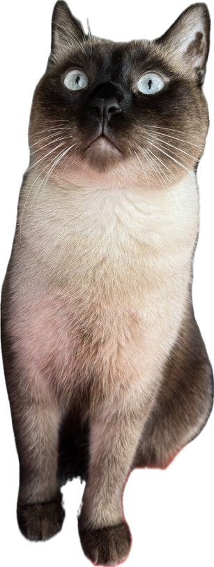

Bio
Mi chiamo Bartolomiao, ma puoi chiamarmi Bubu. Vivo qui da due anni e occupo più spazio di quanto sarebbe strettamente necessario.
Sono un gatto riservato, siamese e strutturalmente grasso. Non per colpa mia, ma per una serie di scelte coerenti nel tempo.
Mi muovo lentamente. Non perché sia stanco. Ma perché ho una massa corporea che merita rispetto.
Scappo dagli sconosciuti, ma non troppo velocemente. Torno quando ho fame o nostalgia. Faccio le fusa solo per brevi periodi e poi devo riposarmi.
Cose che faccio
- Dormo in posizioni che sfidano la geometria.
- Mi siedo sulle cose importanti finché smettono di esistere.
- Mi alzo con impegno.
- Mi sdraio di nuovo senza una vera ragione.
- Controllo che tu non sia una minaccia (da sdraiato).
- Osservo Sibilla fare errori senza muovermi.
Green flags
- Sono caldo d’inverno.
- Sono molto morbido.
- Non corro via subito.
- Occupo il letto in modo affidabile.
Red flags
- Mi stanco salendo sul divano.
- Fingo di non sentire quando mi chiami.
- Mi offendo se mi pesi con lo sguardo.
- La bilancia è una mia nemica politica.
Cosa cerco
Cerco una persona che sappia accettare il mio peso emotivo e quello reale senza fare commenti inutili.
Cerco qualcuno che mi ami anche quando occupo l’80% del divano e il 100% della tua attenzione.
La coda ha chiesto di specificare che è grasso ma molto affidabile.